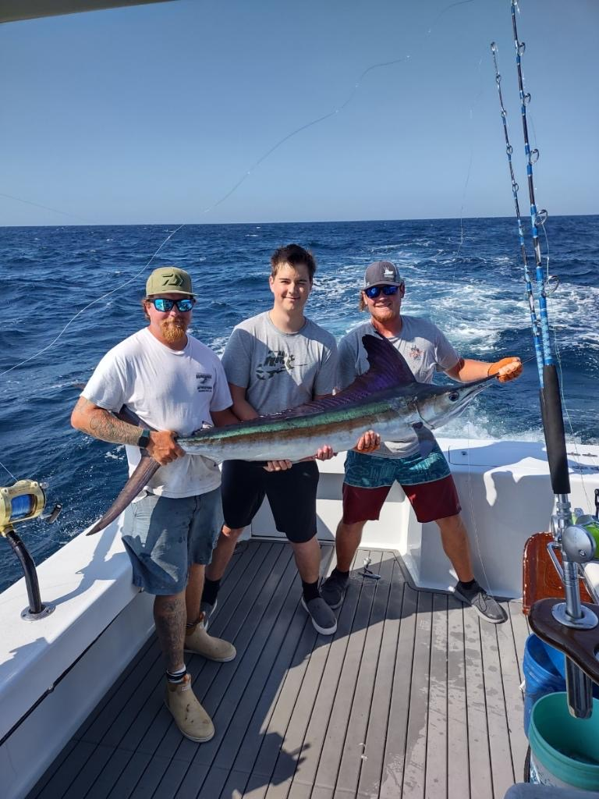
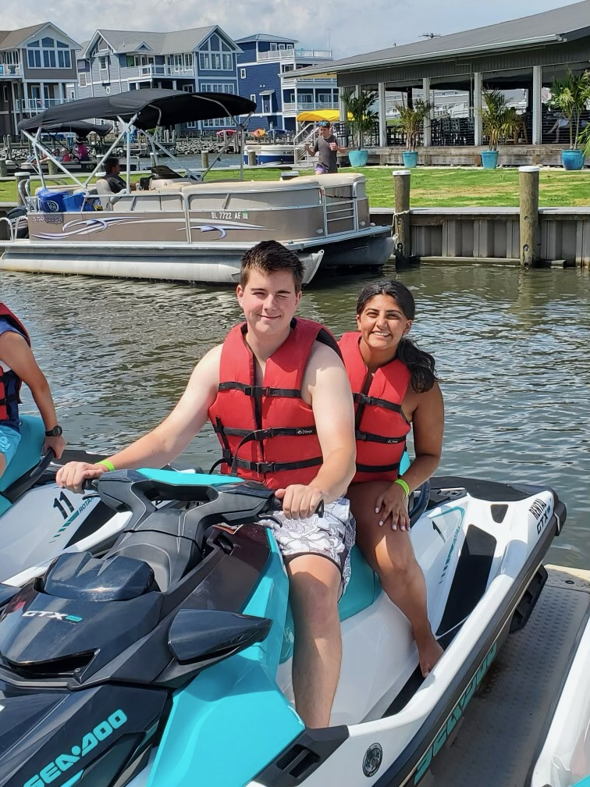

Music
I spent more than half of my life attempting to play different instruments.
I focused mostly on playing the drumset, but toward the end of high school I also began to play the guitar.
For the Spring 2023 semester, I have join UMBC's symphony orchestra as a percussionist.
Other Interests


I love being at the water more than any other place.
If I were not in school to do computer science, I believe that I would be working on the water
any way I could find.